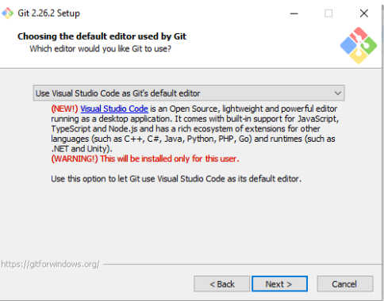
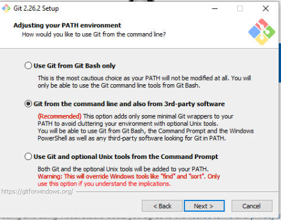
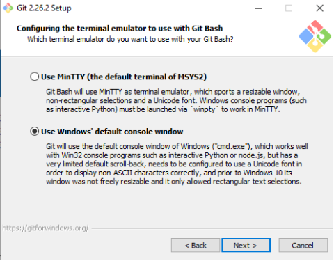
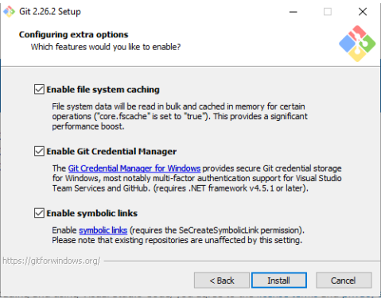
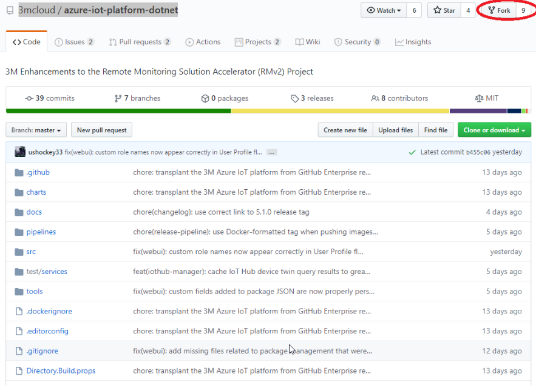
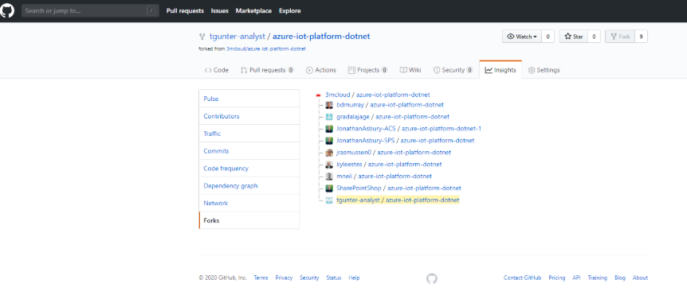
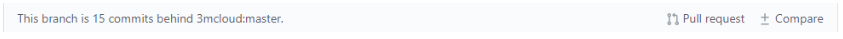
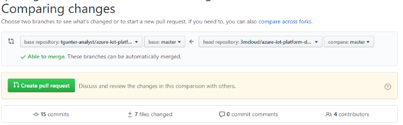
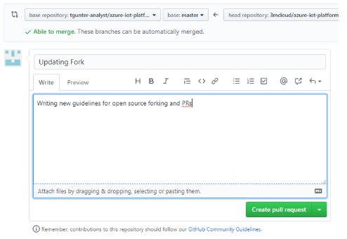

Introduction
Git is a distributed version-control system for tracking changes in source code during software development. It is designed for coordinating work among programmers, but it can be used to track changes in any set of files. Its goals include speed, data integrity, and support for distributed, non-linear workflows. It is designed to handle everything from small to very large projects with speed and efficiency.
Pre-requisites
Be sure to installed VS Code first. Then you'll have the option of hooking Git into VS Code as you're editor.
If you're going to use recommended NVM (Node Version Manager) on Windows, you'll need to Enable symbolic links during the installation. See settings section, install step Configuring extra options below for more information.
Git
Click here to download git for different OS.
Settings
Use the default values except on the screenshots below. For those steps, use the settings indicated in the screenshot (assuming Win Install).




GitHub Desktop (optional)
Click here to download GitHub Desktop for macOS, Win, and Linux.
Connecting Your GitHub Repository to 3M
- The repository you are look for is https://github.com/3Mcloud/azure-iot-platform-dotnet/
- You will then select Fork in the top right hand corner as displayed below

- This will then allow you to tie your personal account to the 3m cloud
- You are able to verify that you are associated by clicking the number next to fork. It will display the different accounts attached as shown below.

- You can see mine is highlighted, using this method you are able to raise PR's and also submit Reviews. Keep in mind we need two reviews for QA purposes.
- You can also see what your teammates have been working on by clicking on their account.
- You are able to sync data from your repo to the 3m master. There are 2 main ways to do this.
- This way is done by the cli.
- This is the way to do it through the web gui. I think this is the ideal way to do this. I will attach a video and screen shots.
- https://youtu.be/YhwBgYPfoVE
- As you can see my repo is 15 commits behind.

- After comparing it will tell me I am able to merge.

- You would then submit a PR to sync your fork.

- https://youtu.be/YhwBgYPfoVE
CLI Approach to Refresh Local Master with Upstream Changes
Note: This approach will completely replace your local master (forked 3M repo) with changes upstream (3M Cloud):
git remote add upstream /url/to/original/repo
git fetch upstream
git checkout master
git reset --hard upstream/master
git push origin master --force
CLI Approach to Creating New Branch
By on a new copy of "master" (using above approach). Then create a new branch
git checkout -b 1245-fix(webui)-deployment-flyout